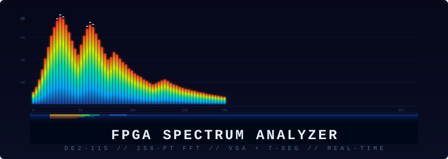
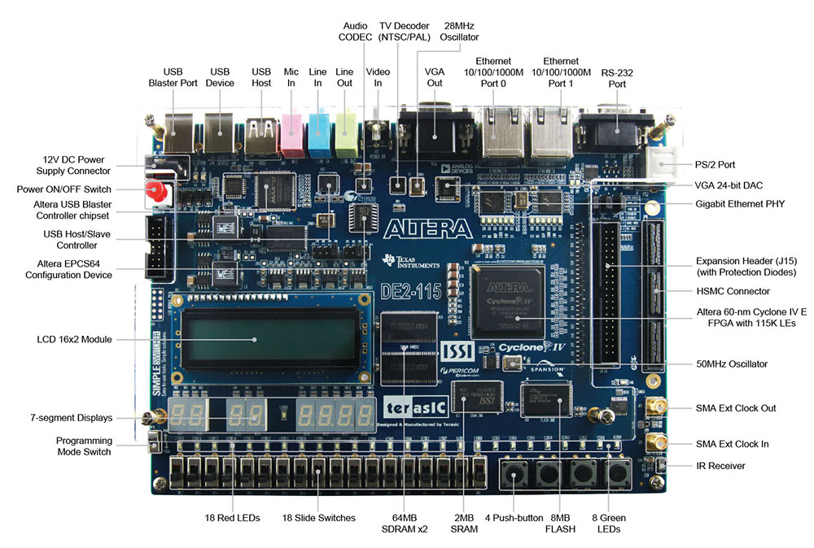
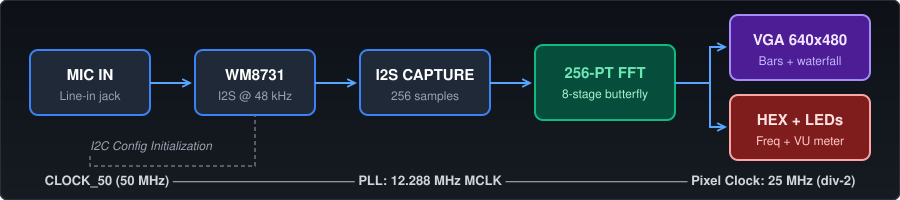
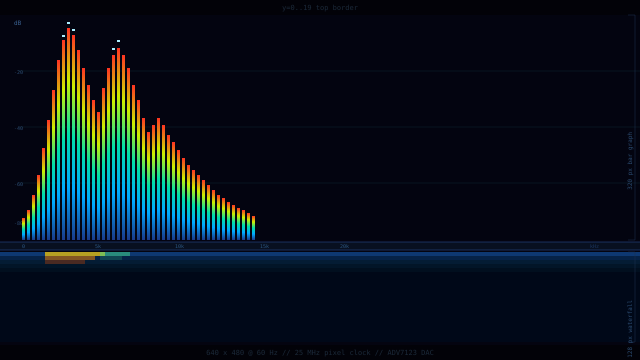

Real-time Audio Spectrum Analyzer on a Cyclone IV FPGA
Captures audio from the DE2-115's line-in jack, runs a 256-point radix-2 FFT in hardware, and displays the frequency spectrum in real time on both a VGA monitor and the board's 7-segment displays. Everything runs meticulously on the FPGA fabric at 50 MHz — no soft processor, no external memory, no software.


The VGA output is the centerpiece. Operating at a resolution of 640x480 @ 60 Hz, it is driven seamlessly through the DE2-115's onboard ADV7123 DAC.
128 frequency bins, log-scaled magnitudes with priority-encoder interpolation. Features instant attack and 3 px/frame decay with a stunning 4-zone colormap.
Bright cyan-white markers track the highest point per frequency bin and slowly descend over time for a professional analyzer aesthetic.
A lower 128-row scrolling heat-map tracks spectral history in real-time, utilizing block RAM and circular buffer traversal.
Axis grids and textual labels (dB levels, frequency markers) are synthesized using a custom lightweight 4x5 pixel font ROM.

| Parameter | Value |
|---|---|
| FFT Size | 256 points (8-stage DIT) |
| Sample Rate | 48 kHz (WM8731 I2S) |
| Frequency Resolution | ~187.5 Hz/bin |
| VGA Output | 640 x 480 @ 60 Hz |
| Pixel Clock | 25 MHz |
| Waterfall Depth | 128 frames (~27s history) |
| Block RAM Usage | ~16 KB (Waterfall M9K) + Twiddle ROM |